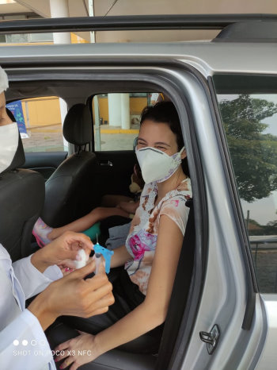
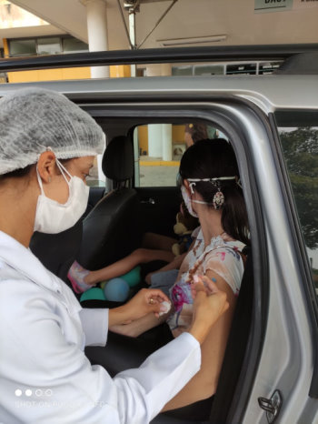

O ministério da saúde declarou o início da vacinação em professores,
no dia 1 de junho; foram distribuídas 43,8 milhões de doses para
começo do processo. Esse grupo estava na lista de prioridades e
começaram a receber doses para imunização. Acredita-se que o maior
incentivo para vacinação nessa área é amenizar o impacto causado pela
Covid-19 com o retorno das aulas presenciais.
As vacinas aplicadas nos professores é a AstraZeneca. Por mais que a
vacina seja segura e possui proteção contra a Covid-19, ela apresenta
alguns efeitos colaterais. Nessa perspectiva, a professora, Cristina
Cheib, do Colégio Instituto Coração de Jesus, disse "tive muitos
efeitos colaterais da vacina: calafrios, muita dor no corpo, cabeça
explodindo, dor nas juntas, enjôo. Vou ser sincera, nunca, em minha
vida, havia passado tão mal". Pensa-se que a dor da aplicação da
vacina vale a pena pela imunização e proteção contra a doença.

Na entrevista feita com a professora, ela menciona "Foi uma sensação
com um misto de emoções: gratidão por, finalmente, poder enxergar uma
luz para o retorno às aulas e, ao mesmo tempo, pensei nas pessoas que
não tiveram oportunidade de serem vacinadas, e perderam sua vida". De
acordo com o ministério da saúde, a aplicação de vacinas em
professores é uma estratégia para o retorno das aulas presenciais.
Ainda na entrevista, Cristina disse que acredita que, na 3ª etapa, as
aulas possam voltar, mas tudo depende das novas variantes, pois ainda
não sabemos se as vacinas são capazes de proteger. E, como muitos pais
ainda não foram vacinados, para os alunos, que são de uma faixa etária
para a qual não existe vacina ainda, é preciso avaliar com cautela os
prós e os contras.
Tendo em vista os aspectos apresentados, o que nos resta nesse momento
é acreditar que tempos melhores virão e ter gratidão por ver pessoas
próximas a nós sendo vacinadas. Muitas pessoas não acreditam que as
aulas voltem com esse vírus se espalhando por aí. E você, como pensa a
respeito disso? Acredita que as aulas possam voltar em meio de
pandemia?
